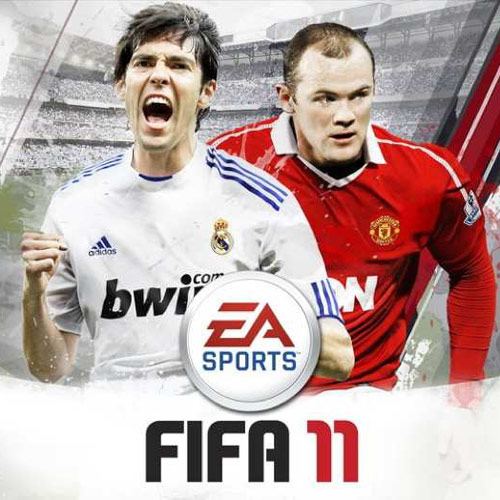

| PORTADA | NOMBRE | RELEVANCIA |
| FIFA 18 FIFA WORLD CUP | 26.4 MILLONES DE UNIDADES VENDIDAS EN PLATAFORMAS, #1 JUEGO DE FUTBOL MAS JUGADO EN 2018 |
|
| FIFA 19 | 20 MILLONES DE UNIDADES VENDIDAS EN PLATAFORMAS, #1 JUEGO DE FUTBOL MAS JUGADO EN 2019 Y #3 MAS JUGADO EN 2020 |
|
|  | FIFA 11 FOOTBALL | 16 MILLONES DE UNIDADES VENDIDAS EN PLATAFORMAS, #2 JUEGO DE FUTBOL MAS JUGADO EN 2011 Y EL MAS EXCLUSIVO EN SU AÑO |
| FIFA 13 | 14.5 MILLONES DE UNIDADES VENDIDAS EN PLATAFORMAS, #2 JUEGO DE FUTBOL MAS JUGADO EN 2013 |
|
| FIFA 15 ULTIMATE TEAM EDITION | 14 MILLONES DE UNIDADES VENDIDAS EN PLATAFORMAS, #1 JUEGO DE FUTBOL MAS JUGADO EN 2015 Y #2 MAS JUGADO EN 2016 RECORD DE VENTAS EN 2015 SOBRE VIDEOJUEGOS |
|
| FIFA 14 | 20 MILLONES DE UNIDADES VENDIDAS EN PLATAFORMAS, #1 JUEGO DE FUTBOL MAS JUGADO EN 2014, #3 MAS JUGADO EN 2015 Y #5 MAS JUGADO EN 2016 MEJOR PUNTUACION NUNCA ANTES VISTA ( 4.9 / 5 ESTRELLAS ) |